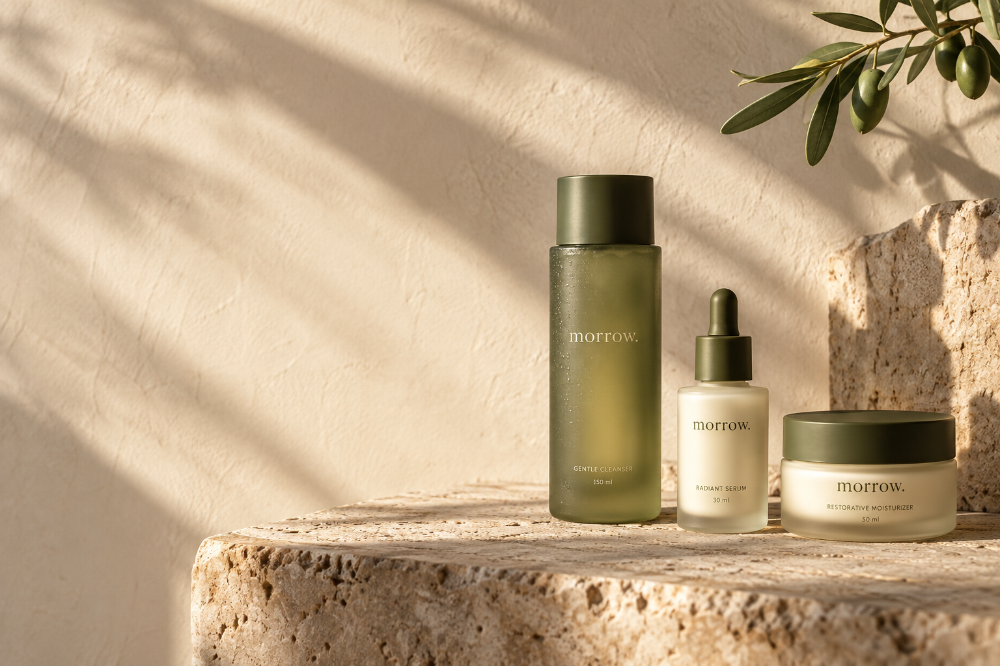
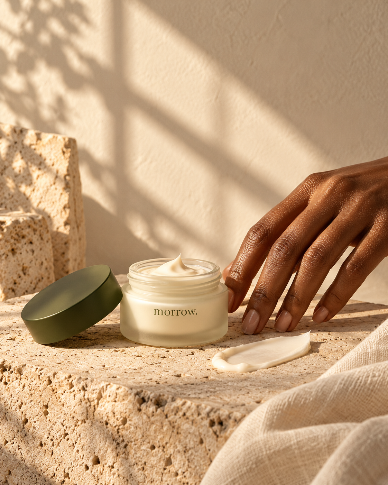
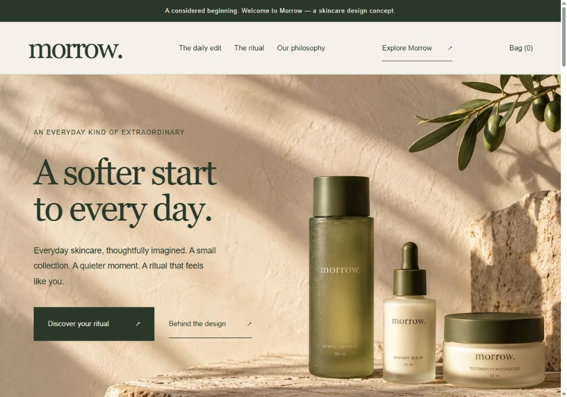
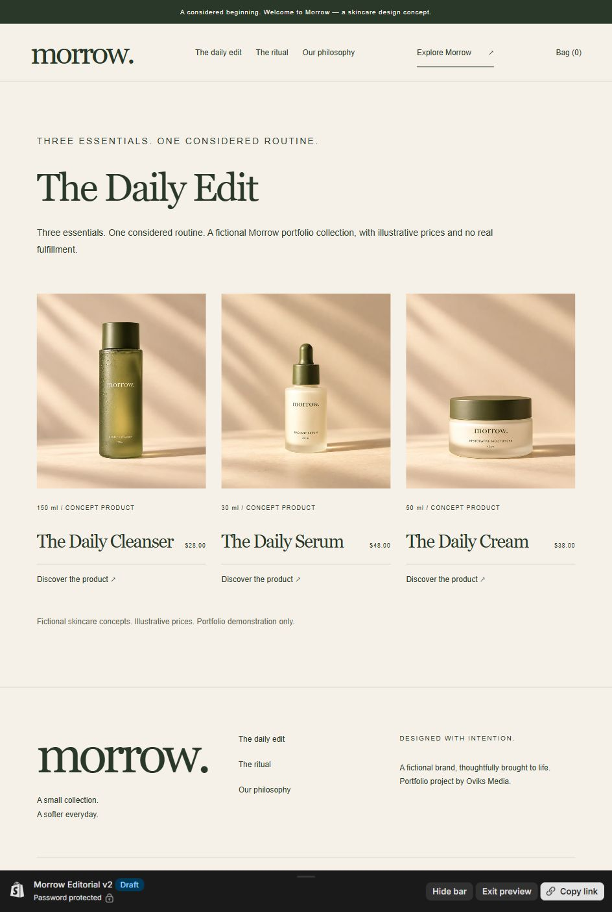
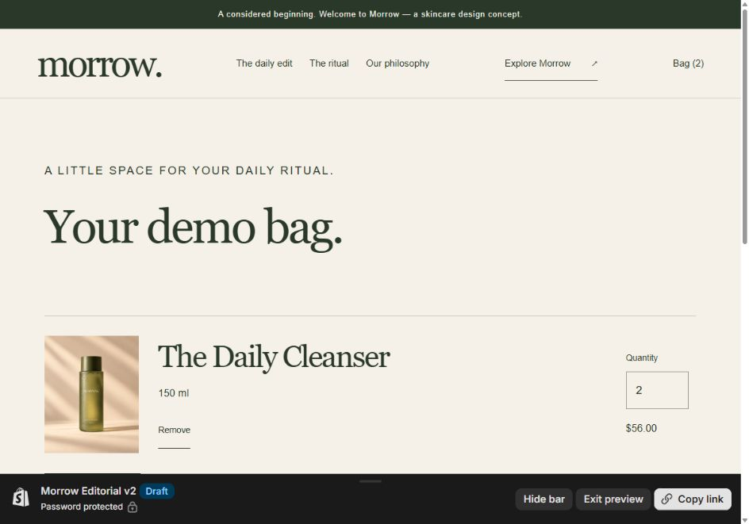

PaperOliveStone
A quiet palette.
Warm paper, deep olive, and stone tones connect the interface with the packaging and campaign scenes.
OVIKS MEDIA / SELF-INITIATED PORTFOLIO PROJECT
A fictional skincare brand brought to life through an editorial Shopify storefront, a focused three-product catalog, and a working demo shopping flow.
See the storefront screensExplore the live Shopify demo
Visitor password: suweid

01 / THE BRIEF
The design brief was to turn a blank Shopify development store into a cohesive skincare concept that a hiring reviewer could explore beyond the homepage.
The result needed a clear visual identity, product discovery, readable product details, and a functioning bag. As a self-initiated project, it also needed to distinguish fictional products from real commerce.
02 / THE VISUAL DIRECTION
Warm paper, deep olive, and stone tones connect the interface with the packaging and campaign scenes.
Serif headlines establish the mood. Plain body text and restrained labels keep navigation, prices, and controls easy to read.
Cleanser, serum, and cream give the experience a simple structure: begin, pause, finish.
03 / THE SHOPIFY BUILD
The theme uses Horizon as its foundation, with custom Liquid sections and responsive styling for the homepage, header, footer, collection, product pages, and demo bag.
Product cards read Shopify catalog data. Product forms submit selected variant IDs and quantities to Shopify. The bag uses Shopify line items, totals, quantity updates, and removal links.
The homepage headline, introduction, campaign image, and featured collection can be changed in the theme editor.
Explore the collection
04 / THE PRODUCT EXPERIENCE
Individual product imagery, visible size and price, labeled quantity controls, and clear demo notices carry the visual direction through the shopping journey.
On smaller screens, the layout becomes a single column, while navigation and the bag remain accessible from the header.
See the product pages05 / WHAT WAS CHECKED
All three products appeared on the homepage and collection. Product pages rendered their images, sizes, and illustrative USD prices.
Adding one cleanser produced a $28 subtotal. Updating the quantity to two produced $56. Removal returned the bag to its empty state.
Mobile collection, product, and bag layouts were inspected at 390 pixels wide without observed horizontal overflow.
Shopify Theme Check reported zero errors, with six warnings in inherited Horizon files. This is a portfolio check, not a real-store launch assessment.
THE STOREFRONT / VERIFIED ON SHOPIFY
Actual storefront screenshots from the Shopify build. The products and prices are fictional portfolio content.



Verified flow: add one cleanser at $28, update quantity to two at $56, then remove to return to an empty bag.
PROJECT CONTEXT
Morrow is a fictional brand and self-initiated portfolio project by Oviks Media, developed with AI assistance for copy, imagery, and theme implementation. It is not commissioned client work.
The products and prices are illustrative. No real formulation, clinical claims, customer reviews, or sales results are represented. The demo interface offers a shopping bag without a checkout action or real fulfillment.
This public case study opens without a password. The separate Shopify development-store demo requires a storefront password. The screenshots below let reviewers assess the design and shopping flow here.
Shopify visitor password: suweid
Select “Enter using password” on the store, then enter the password above.